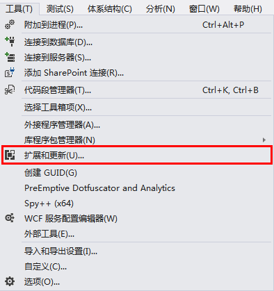
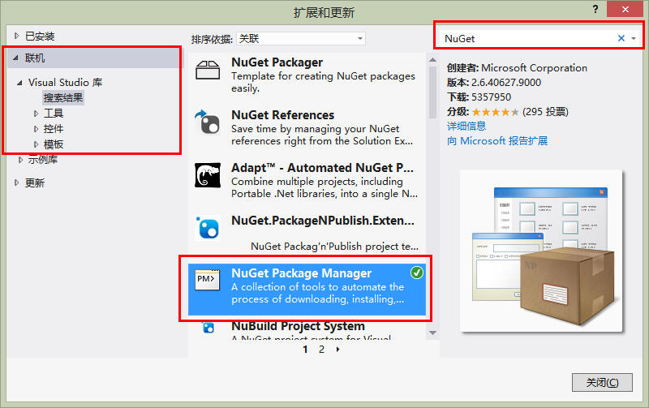
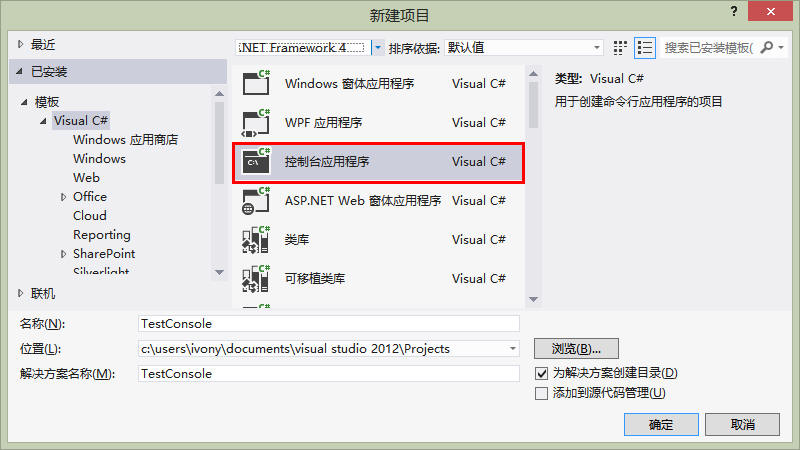

Jumony 内置了一个完全符合 HTML 规范的解析器，即 Jumony Parser。解析器是最重要的构建 DOM 模型的方式之一，但在使用 Jumony
for ASP.NET 进行网站开发时，解析器将被框架自动调用。
Jumony Parser 是 Jumony 核心框架的一部分，下面将介绍如何安装和使用 Jumony Parser。
安装 Jumony Core
Jumony 所有组件均在 NuGet 上发布最新的稳定版本，所以只需要你的 VisualStudio 安装了 NuGet 包管理器。通过 NuGet
下载 Jumony 组件是最简单的方式。
最新的 Visual Studio 2012 已经内置了 NuGet 包管理器，如果你还在使用 2012 之前的版本，则可以通过扩展管理器自行下载 NuGet
包管理器。安装步骤如下
首先点击工具菜单，选择扩展和更新

在弹出的界面首先选择联机，然后在搜索框中输入NuGet，待到搜索结果出现后，找到 NuGet Package Manager 按提示安装即可

确保 NuGet 组件已经安装好后，接下来，我们创建一个控制台项目，并为其安装 Jumony 核心组件。
首先，创建一个控制台项目。

然后，在解决方案资源管理器中，找到这个项目，点击鼠标右键，在右键菜单中，选择管理 NuGet 包

在出现的界面里，首先还是选择联机，然后在搜索框中输入 "Jumony"，就会看到如下的结果：

在这个示例里，我们只需要用到 Jumony 的解析器功能，所以只需要安装 Jumony Core 即可。在安装过程中，可能会出现许可证的界面，选择接受。
安装完毕后，我们可以看到这个控制台项目增加了几个 DLL 的引用：

至此，Jumony Core 就已经成功被安装在项目上了。我们用来作示范的项目是一个控制台项目。但其他项目类型，包括网站，都可以用同样的方式进行安装。
创建解析器，解析 HTML 文档
在项目上安装好 Jumony Core 组件包后，就可以在项目中直接使用 Jumony Parser 了，但在使用之前，我们需要添加几个命名空间的引用。特别值得注意的是，添加命名空间引用对于
Jumony 组件来说是必须的，因为 Jumony 的 API 大部分都是通过扩展方法提供的。如果不引用命名空间，就会出现 API 找不到的情况。
在这个示例里，我们需要引用两个命名空间，分别是： Ivony.Html 和 Ivony.Html.Parser ，前者提供了 Jumony 的基本 API
以及定义了 HTML DOM 模型抽象，而后者则是 Jumony Parser 的命名空间。事实上，进行任何基于 Jumony 的开发， Ivony.Html
命名空间总是必须的，除非你使用了另外的一套 API（如 jQuery 风格的 API）。而 Ivony.Htrml.Parser 则常常不是必须的。
引用这两个命名空间只需要简单的写下如下两行代码即可：
using Ivony.Html;
using Ivony.Html.Parser;
然后我们需要创建一个解析器对象，可以通过这样一行代码来实现：
var parser = new JumonyParser();
创建好解析器对象后，就可以用 Parse 方法来解析任意一段 HTML 文本字符串了，例如：
var document = parser.Parse( "<html><body><p class=content>Test Content</body></html>" );
解析器的 Parse 方法接受一段 HTML 字符串，并返回一个 IHtmlDocument 对象。IHtmlDocument 对象代表了一个文档，上面的这个字符串是一个标准的
HTML 文档，其包含了三个元素，html、body和p。我们可以通过 Jumony 的 API 来遍历文档的所有元素。下面，我们就来看看 Jumony Parser
是不是真的解析出了三个元素，写下如下的测试代码可以让我们看一下 document 对象包含哪些元素。
foreach ( var element in document.Descendants() )
Console.WriteLine( element.OuterHtml() );
Descendants 方法用于遍历所有的子代元素，由于文档对象是根对象，所以 Descendants 方法可以遍历这个文档的所有元素。
输出的结果应该如下图所示：
<html><body><p class="content">Test Content</p></body></html>
<body><p class="content">Test Content</p></body>
<p class="content">Test Content</p>
LoadDocument 方法
上面我们介绍的 Parse 方法可以从一个包含 HTML 代码的字符串中解析出 HTML DOM 模型。但除此之外， Jumony API 还提供了
LoadDocument 方法可以从互联网或者本地文件中直接解析 HTML 文本为 DOM。
LoadDocument 方法接收一个 url 参数，以及可选的字符编码参数。如若你不指定编码， Jumony 将尝试自动检测该 URL 地址的 HTML
文档的编码。
比如说，如下的代码可以直接解析新浪的首页：
document = parser.LoadDocument( "http://www.sina.com.cn/" );
下面的代码可以输出新浪的首页一共有多少个元素：
document = parser.LoadDocument( "http://www.sina.com.cn/" );
Console.WriteLine( document.Descendants().Count() );
Console.ReadLine();
运行结果如下：
3250
除了可以直接在互联网上抓取 HTML 文件解析， LoadDocument 方法也可以直接加载本地文件。将本地文件路径作为 URL
或者使用files: 协议都可以直接从本地文件系统抓取 HTML 文件解析。比如说，像这样：
document = parser.LoadDocument( @"C:\1.html" );
当从互联网上抓取 HTML 文件解析时，Jumony
可以通过响应头中的编码信息自动确定文档的编码，但如果是加载本地文件，或者一些比较特立独行的网站时，这一机制可能失效，这时候，我们可以手动指定一下编码：
document = parser.LoadDocument( @"C:\1.html", Encoding.UTF8 );
但即使指定了编码，如果 Jumony 发现可以找到更为合适的编码时，也会忽略我们指定的编码，所以 LoadDocument
方法还有一个参数来关闭自动检测编码的行为：
document = parser.LoadDocument( @"C:\1.html", Encoding.UTF8, false );
除了从一个地址来加载 HTML 文档， LoadDocument 方法还提供了许多重载来帮我们从 Stream 、 TextReader 或是
WebResponse 中来加载 HTML 文档。
为了测试 Jumony 对于 HTML 文档解析中出现的问题，Jumony 有一个公开的用于测试 JumonyParser 的网站，可以直接使用
URL 或者上传本地 HTML 文件交由 JumonyParser 解析，来查看 JumonyParser 的解析结果。这个网站的地址是：http://dom.jumony.net/
好了，关于解析器的使用，我们就先聊到这里，下一篇 QuickStart 我们将来看一下 Jumony API 所提供的 CSS 选择器支持。